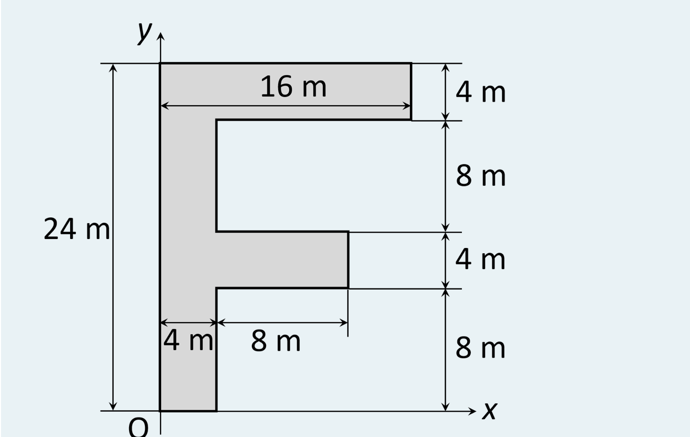
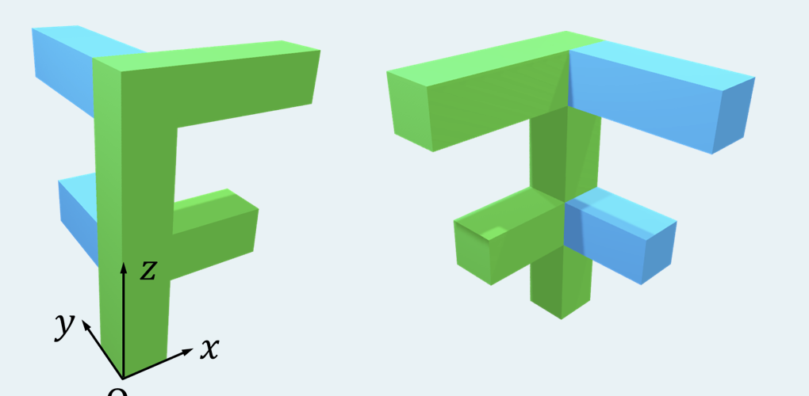
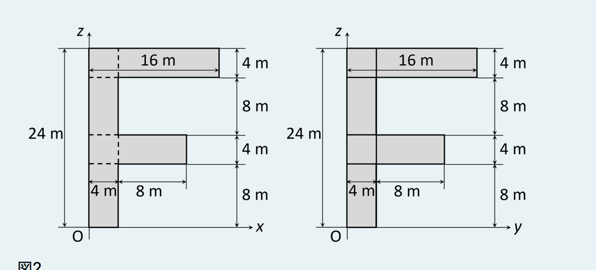

2026/10/20／第5回「重心」の Moodle 小テスト（課題 5A〔必修〕全3問）。各問を、教材 第5回の道具（分割と合成・積分表示・道具箱）で、手順①〜⑥にそって解き直したもの。
Locate the center of gravity (center of figure) of the plate.
（板の重心〔図心〕の位置を求めなさい。）

解答欄：座標 $(x_G,\ y_G)$ [m]。
解答
① 形を読む：図の右側の縦寸法は上から 4, 8, 4, 8 m（合計 24 m）。下の横寸法は「4 m（縦棒の幅）＋ 8 m」。したがって板は、縦棒（$x:0\sim4$）に、上の横棒（$y:20\sim24$、右端 $x=16$）と中の横棒（$y:8\sim12$、右端 $x=4+8=12$）が付いた形である。
② 座標軸：図のとおり、左下の角 O を原点、右向きを $x$、上向きを $y$ とする。
③ 3つの長方形に分ける（教材 2.4節）。重ならないように切るのがコツで、横棒は縦棒の右側 $x\ge4$ の部分だけを数える。
④ 表にする（面積 $A_i$ と各部分の重心 $(x_i,y_i)$。長方形の重心は中心）：
| 部分 | 範囲 [m] | 面積 $A_i$ [m²] | $x_i$ | $y_i$ | $A_ix_i$ | $A_iy_i$ |
|---|---|---|---|---|---|---|
| ① 縦棒 | $x:0\sim4,\ y:0\sim24$ | $4\times24=96$ | 2 | 12 | 192 | 1152 |
| ② 上の横棒 | $x:4\sim16,\ y:20\sim24$ | $12\times4=48$ | 10 | 22 | 480 | 1056 |
| ③ 中の横棒 | $x:4\sim12,\ y:8\sim12$ | $8\times4=32$ | 8 | 10 | 256 | 320 |
| 合計 | 176 | 928 | 2528 | |||
⑤ 割って重心（教材 2.4節の合成公式 $x_G=\sum A_ix_i/\sum A_i$）： $$x_G=\frac{928}{176}=\frac{58}{11}=5.273\ \mathrm m,\qquad y_G=\frac{2528}{176}=\frac{158}{11}=14.36\ \mathrm m$$ ⑥ 確かめ：(i) 欠損法（2.5節）：$16\times24$ の長方形（面積 384、重心 $(8,12)$）から、3つの空き〔$x:4\sim16,\ y:12\sim20$（12×8）、$x:4\sim16,\ y:0\sim8$（12×8）、$x:12\sim16,\ y:8\sim12$（4×4）〕を引く。面積 $384-96-96-16=176$ ✓。$x_G=\dfrac{8\cdot384-10\cdot96-10\cdot96-14\cdot16}{176}=\dfrac{928}{176}$ ✓（$y_G$ も一致、Python で確認）。 (ii) 範囲と向き：$0<x_G<16$、$0<y_G<24$。縦棒だけなら $x=2$ だが、横棒が右へ張り出すぶん右にずれて 5.27。上に大きな横棒（②）があるので、$y_G$ は中央の 12 より上の 14.4 ✓。 (iii) 重心は板の外：点 $(5.27,\ 14.4)$ は、縦棒（$x\le4$）の外で、上の横棒（$y\ge20$）と中の横棒（$y\le12$）の間の空きにある。重心は物体の外に出ることがある、という例になっている。
答え：重心 $(x_G,\ y_G)=(5.27,\ 14.4)$ m（$=(58/11,\ 158/11)$ m）
図1のような物体の重心座標 $(x_G,y_G,z_G)$ を求めなさい。ただし、物体内部は一様であり、青色の材料の比重は緑色の材料の 1.5 倍である。各部の寸法は図2のとおり。


解答欄：$x_G,\ y_G,\ z_G$ [m]。
解答
① 形を読む（前提）：図1・図2から、この物体は断面 4 m × 4 m、高さ 24 m の緑の柱（$x:0\sim4,\ y:0\sim4,\ z:0\sim24$）に、上段（$z:20\sim24$）と中段（$z:8\sim12$）で、$x$ 方向に伸びる緑の腕と$y$ 方向に伸びる青の腕が付いたものと読める。腕の太さは柱と同じ 4 m × 4 m。図2の左（$xz$ 図）は $x$ 方向の腕、右（$yz$ 図）は $y$ 方向の腕の寸法で、どちらも 5A-1 と同じ F字形。したがって腕の長さは、上段が柱の外へ 12 m（先端 16 m）、中段が 8 m（先端 12 m）。（図1の左の絵では、$x$ 軸の向きに伸びる腕が緑、奥（$y$ 軸の向き）へ伸びる腕が青に見える。この読みが前提で、公式解答との照合はしていない。）
② 座標軸：図1のとおり、柱の下の角 O を原点、$x$・$y$ は水平、$z$ は上向き。
③ 5つの直方体に分ける（重ならないように。腕は柱の外側だけを数える）。重みは質量 ＝ 体積 × 密度。緑の密度を 1、青を 1.5 とおく（比重の比だけが効くので、実際の密度の値は要らない）。
| 部分 | 色 | 範囲 [m] | 体積 $V_i$ [m³] | 密度 | 質量 $m_i$ | 重心 $(x_i,y_i,z_i)$ |
|---|---|---|---|---|---|---|
| ① 柱 | 緑 | $x:0\sim4,\ y:0\sim4,\ z:0\sim24$ | $4\cdot4\cdot24=384$ | 1 | 384 | $(2,\ 2,\ 12)$ |
| ② 上の腕（$x$ 方向） | 緑 | $x:4\sim16,\ y:0\sim4,\ z:20\sim24$ | $12\cdot4\cdot4=192$ | 1 | 192 | $(10,\ 2,\ 22)$ |
| ③ 上の腕（$y$ 方向） | 青 | $x:0\sim4,\ y:4\sim16,\ z:20\sim24$ | 192 | 1.5 | 288 | $(2,\ 10,\ 22)$ |
| ④ 中の腕（$x$ 方向） | 緑 | $x:4\sim12,\ y:0\sim4,\ z:8\sim12$ | $8\cdot4\cdot4=128$ | 1 | 128 | $(8,\ 2,\ 10)$ |
| ⑤ 中の腕（$y$ 方向） | 青 | $x:0\sim4,\ y:4\sim12,\ z:8\sim12$ | 128 | 1.5 | 192 | $(2,\ 8,\ 10)$ |
| 合計 | 1184 | |||||
④ 各座標について「質量 × 重心」を足す（教材 2.4節。3次元でも、座標ごとに別々に計算するだけで、式の形は 5A-1 と同じ）： $$\sum m_ix_i=384\cdot2+192\cdot10+288\cdot2+128\cdot8+192\cdot2=768+1920+576+1024+384=4672$$ $$\sum m_iy_i=384\cdot2+192\cdot2+288\cdot10+128\cdot2+192\cdot8=768+384+2880+256+1536=5824$$ $$\sum m_iz_i=384\cdot12+192\cdot22+288\cdot22+128\cdot10+192\cdot10=4608+4224+6336+1280+1920=18368$$ ⑤ 割る（3つとも同じ全質量 1184 で割る）： $$x_G=\frac{4672}{1184}=\frac{146}{37}=3.946\ \mathrm m,\quad y_G=\frac{5824}{1184}=\frac{182}{37}=4.919\ \mathrm m,\quad z_G=\frac{18368}{1184}=\frac{574}{37}=15.51\ \mathrm m$$ ⑥ 確かめ：(i) $x$ と $y$ の大小：形は $x$ と $y$ を入れ替えても同じで、違うのは青（重い）が $y$ 方向にあることだけ。よって $y_G>x_G$ となるはずで、$4.92>3.95$ ✓。 (ii) 極限：青の密度を 1（緑と同じ）にすると、$x_G=y_G=\dfrac{768+1920+384+1024+256}{1024}=\dfrac{4352}{1024}=4.25$ と一致する（Python で確認）。1.5 にすると $y$ 側に寄って、$x_G$ は小さく、$y_G$ は大きくなる ✓。 (iii) $z_G$：全体の高さの中央 12 より上なのは、上段の腕（$z=22$）が重いから ✓。範囲は $0<z_G<24$ ✓。 (iv) 重心は物体の外：$(3.95,\ 4.92,\ 15.5)$ は、$z=15.5$ では柱（$x,y\le4$）しかないが、$y_G=4.92>4$ なので柱の外、つまり腕と腕の間の空きにある（5A-1 と同じ）。
答え：$x_G=3.95$ m、$y_G=4.92$ m、$z_G=15.5$ m（$=146/37,\ 182/37,\ 574/37$ m）
$xy$ 平面内で、$y^2=4ax,\ x=0,\ y=b$ で囲まれた領域の重心（図心）を求めなさい。ただし、$a,b$ は正の定数とし、$y\ge0$ の範囲のみを対象とする。
解答欄：重心 $(x_G,y_G)$ について、$x,y$ 座標をそれぞれ $\dfrac{\alpha}{\beta}a^{\gamma}b^{\delta}$ の形で表したときの係数 $\alpha,\beta,\gamma,\delta$（いずれも整数）。
解答
① 領域を図にする：$y^2=4ax$ は、$x=\dfrac{y^2}{4a}$ と書ける、$x$ 軸方向に開いた放物線（頂点は原点）。$y\ge0$ の部分の曲線と、$y$ 軸（$x=0$）、水平線 $y=b$ で囲まれるのは、曲線の左側・$y$ 軸の右側・高さ $b$ の下の領域である（下図は $a=1,\ b=4$ の例）。曲線は $y=b$ のところで $x=\dfrac{b^2}{4a}$ に達する。
② 小片の取り方（教材 3.2節の三角形と同じ考え方、ただし横に切る）：高さ $y$ のところで、厚さ $dy$ の横短冊に切る。この向きに切る理由は、境界が $x=y^2/4a$ と「$x$ について解けた形」で、短冊の長さが $y$ だけの式で書けるから（縦に切ると高さが $b-2\sqrt{ax}$ と平方根が入って面倒）。
③ 短冊の面積と重心：短冊の長さ（左端 0 から曲線まで）は $\dfrac{y^2}{4a}$、厚さ $dy$ なので $$dA=\frac{y^2}{4a}\,dy$$ 短冊の重心は、細長い長方形の中心だから、$x$ 座標は長さの半分 $x_c=\dfrac{y^2}{8a}$、$y$ 座標は $y_c=y$。
④ 面積と一次モーメントを積分する（教材 2.2節：$x_G=\dfrac{\int x_c\,dA}{\int dA}$ の「小片の重心 $x_c$ × 小片の面積 $dA$」）。$y$ を 0 から $b$ まで： $$A=\int_0^b\frac{y^2}{4a}\,dy=\frac{1}{4a}\left[\frac{y^3}{3}\right]_0^b=\frac{b^3}{12a}$$ $$\int x_c\,dA=\int_0^b\frac{y^2}{8a}\cdot\frac{y^2}{4a}\,dy=\frac{1}{32a^2}\int_0^by^4\,dy=\frac{1}{32a^2}\cdot\frac{b^5}{5}=\frac{b^5}{160a^2}$$ $$\int y_c\,dA=\int_0^by\cdot\frac{y^2}{4a}\,dy=\frac{1}{4a}\int_0^by^3\,dy=\frac{1}{4a}\cdot\frac{b^4}{4}=\frac{b^4}{16a}$$ ⑤ 割って重心： $$x_G=\frac{b^5/160a^2}{b^3/12a}=\frac{b^5}{160a^2}\cdot\frac{12a}{b^3}=\frac{12}{160}\cdot\frac{b^2}{a}=\frac{3}{40}\,a^{-1}b^2$$ $$y_G=\frac{b^4/16a}{b^3/12a}=\frac{b^4}{16a}\cdot\frac{12a}{b^3}=\frac{12}{16}\,b=\frac{3}{4}\,a^0b^1$$ ⑥ 確かめ：(i) 単位（次元）：$y^2=4ax$ から $a$ は長さ（左辺は長さ²、右辺は $a\cdot x$）。$x_G\propto b^2/a$ は長さ ✓、$y_G\propto b$ も長さ ✓。 (ii) 範囲：領域は $0\le y\le b$、$0\le x\le b^2/4a$ に収まる。$y_G=\tfrac34b$ は範囲内で、短冊は上ほど長いので中央の $b/2$ より上寄り ✓。$x_G=\dfrac{3b^2}{40a}$ は右端 $\dfrac{b^2}{4a}=\dfrac{10b^2}{40a}$ より小さく、範囲内 ✓。 (iii) 別解（縦に切る）：$x$ のところで高さ $b-2\sqrt{ax}$（重心の高さ $\dfrac{b+2\sqrt{ax}}{2}$）、$0\le x\le b^2/4a$ の縦短冊で積分しても、$A=\dfrac{b^3}{12a}$、$x_G=\dfrac{3b^2}{40a}$、$y_G=\dfrac{3b}{4}$ に一致する（sympy で確認）。 (iv) 数値例：$a=1,\ b=4$ では $x_G=\dfrac{3\cdot16}{40}=1.2$、$y_G=3$。図の G の位置と合う。
答え：$x_G=\dfrac{3b^2}{40a}$ ⇒ $(\alpha,\beta,\gamma,\delta)=(3,\ 40,\ -1,\ 2)$ ／ $y_G=\dfrac{3b}{4}$ ⇒ $(\alpha,\beta,\gamma,\delta)=(3,\ 4,\ 0,\ 1)$